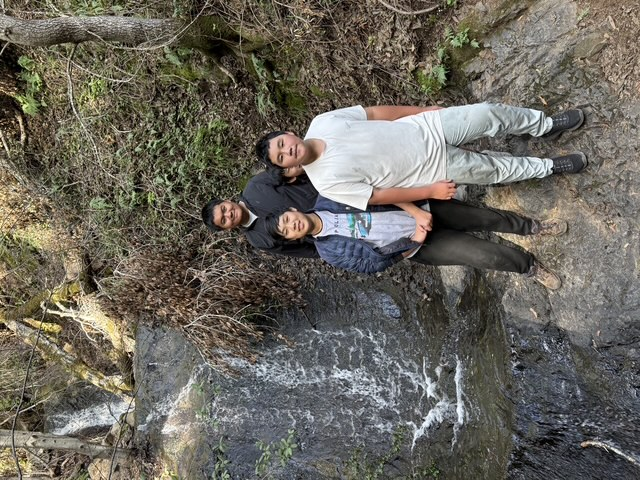

Helping Palo Alto through scout service
Troop 52 serves our neighbors through park cleanups, trail maintenance, and volunteering at local events. These projects teach responsibility and show how scouts can make a positive difference.
